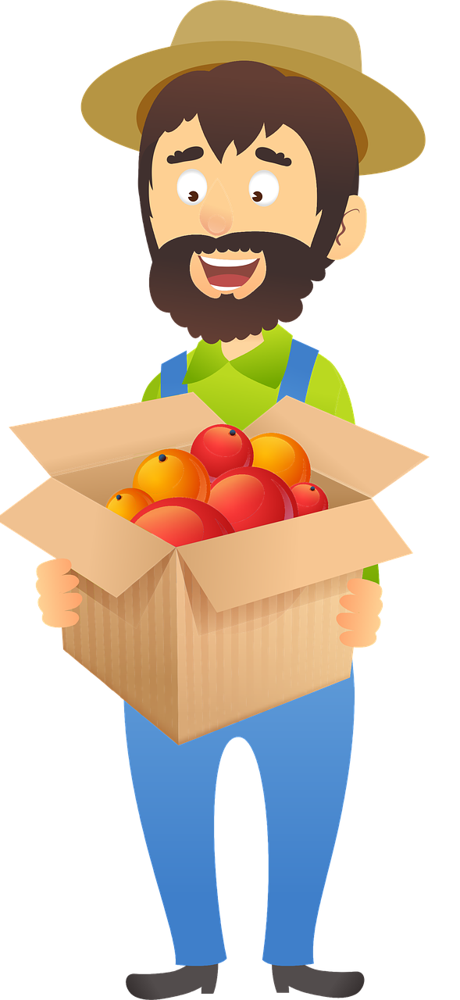

Farmer Giles has been secretly digging up your crops to scupper your prize-winning chances at the county fair.
Get your revenge by attacking his fruit and veg!
Your Farm
Your crops are set out below.
Your crops are planted! Re-plant if you like and click Ready to play when you are done.
Farmer Giles' Farm
Click the cells to find Farmer Giles' crops.